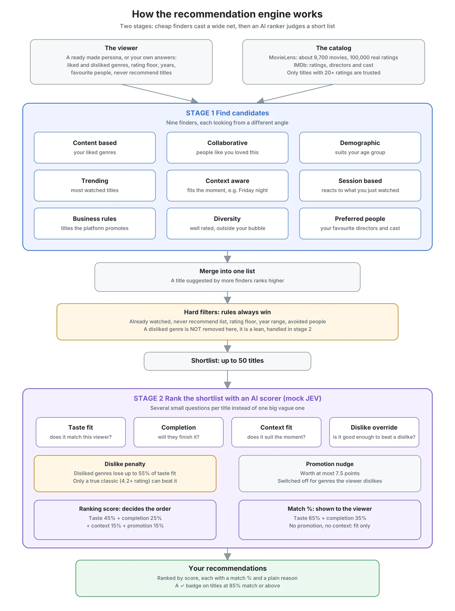

Why I built this
I've spent years in product management on streaming services, so I have seen up close how much a streaming platform depends on its recommendations. If the home screen shows the wrong titles, people scroll, get bored and leave.
Then I came across JEV, a new model from TypeSafe AI. It is not a chatbot. TypeSafe describes it as a "System One" model built for structured decisions inside software: you give it some facts and a few typed questions, and it returns scores or choices with probabilities. The company says it is much faster and cheaper than general purpose language models for this kind of narrow work, and reports end to end latency of roughly 70 to 500 milliseconds in its own comparisons. These are vendor claims, not something I measured.[1]
That made me ask a product question: what if a model like this did the ranking step in a streaming recommender? Ranking a short list of titles is exactly the kind of narrow, repeated judgment it claims to be good at. And yes, "AI powered recommendations" makes a nice headline. But a headline is not a reason to ship. The real test is whether viewers get better picks. So I built it, and then I measured it.
What the engine does
You give it a viewer. It gives back a ranked list of movies, each with a match percentage, and a ✓ badge on the titles it is most confident about.
A viewer can be one of four ready made personas, or you can describe yourself by answering a few plain English questions:
- Genres you like and dislike
- A minimum IMDb rating
- A release year range
- Favourite directors and actors, and people you never want to see
- Favourite movies
- Titles to never recommend (type "Star Wars" and every Star Wars film disappears)
The whole thing runs from one word in the terminal: recommend.
The build
The big picture
The engine works like a funnel, the same broad shape real platforms use:

Stage 1 is cheap and wide. Stage 2 is careful and narrow. The AI never searches the whole catalogue. It only judges the short list it is handed, which is the job it is designed for.
Stage 1: nine finders
Each finder looks at the viewer from a different angle and suggests a few titles:
- Content based: titles in the genres you like.
- Collaborative: "people who loved what you loved also loved this", built from about 100,000 real ratings.
- Demographic: what tends to suit your age group.
- Trending: the most watched titles (rating counts stand in for live trending data).
- Context aware: fits the moment. A Friday evening gets bigger action and thriller titles.
- Session based: reacts to what you just watched.
- Business rules: titles the platform wants to promote.
- Diversity: a few well rated titles from genres you never touch, to avoid the filter bubble.
- Preferred people: films with your favourite directors and actors.
A title suggested by several finders counts as a stronger candidate. Every finder only picks titles with at least 20 ratings, because an average of 5.0 from one person is luck, not quality.
The hard filters
Before anything is ranked, a cleanup step removes titles that must never appear: already watched, outside your year range, below your rating floor, featuring someone you avoid, or on your never recommend list. These are rules, so they always win.
One deliberate choice: a disliked genre is not a hard filter. A genre dislike is a lean, not a rule. It becomes a penalty in Stage 2 instead.
Stage 2: the AI ranker
For each title on the shortlist, the engine asks the model several small questions instead of one big vague one:
- Taste fit: how well does this match this viewer's taste?
- Completion: how likely are they to actually finish it?
- Context fit: does it suit the current moment?
The answers are combined with fixed weights: taste 45%, completion 25%, context 15%, and promotion 15%. A promoted title can gain at most 7.5 points, a nudge, not a head start.
The dislike override
This idea comes from a real problem I worked on. Imagine someone who loves car movies like Fast and the Furious, but cannot stand animated films. Should an animated movie about cars be shown to them?
A hard block would say never. That throws away the rare exception. So every title in a disliked genre takes a heavy score penalty, and the model gets one extra question: does this specific title stand out enough to beat the dislike? It only gets a real chance if it shares your liked genres and is a genuine classic (an average of 4.2 or more from at least 20 raters). Only 39 titles in the whole catalog clear that bar.
Match percentage and the badge
The ranking score and the match percentage you see are two different numbers. The ranking score includes promotion and context. The match percentage only answers "does this fit you?", using taste fit and completion. That way, a title the platform is pushing can never look like a better match than it really is. Titles at 85% or above get the ✓ badge.
How I tested it
Percentages on a screen prove nothing, so I built an offline test with real people:
- Take 100 real MovieLens users.
- Hide the last 5 movies each one rated 4 stars or more.
- Give the engine only their history before those movies.
- Count how often the hidden movies show up in the engine's top 10.
Then I compared it with the simplest possible competitor: a plain list of the most popular titles.
Results
| Top 10 test (100 real users, 500 hidden answers) | Hit rate | Recall |
|---|---|---|
| This engine | 19.0% | 4.4% |
| Plain "most popular titles" list | 22.0% | 5.8% |
Hit rate is the share of users with at least one hidden movie in their top 10. Recall is the share of all hidden movies found.
The honest reading: my engine did not beat the popularity list. Stage 1 did its job and found the hidden movies for many users. Stage 2, running on a simulated model, often failed to push them into the top 10.
That sounds like bad news. It was actually the most useful part of the project, because measuring it showed me exactly where things broke.
What the testing uncovered
Every round of testing found a real problem with a clear root cause:
- Dislikes were erasing whole genres. After a few early exits, a genre's dislike score could grow so large that every title in it scored zero. One in five shortlisted titles was being wiped out. Capping the penalty dropped that from 849 titles to 26.
- The override was not occasional. Any animated film sharing two liked genres had a strong chance to beat the dislike. Toy Story sat at number 2 for a persona that dislikes animation. After requiring a genuine standout rating, it fell to number 31.
- The platform was promoting into a dislike. Toy Story was also a promoted title. Promotion now switches off for any genre a viewer has said they dislike.
- One rating was beating hundreds. A film rated by exactly one person sat at the top of a persona's list with a 100% match. Every finder now needs 20 ratings, and the ranker pulls thin averages toward the catalog average.
- The match percentage could never go above about 74%. For a normal title, promotion is always zero and context barely moves, so the score had a built in ceiling. Splitting "ranking score" from "match percentage" fixed that.
None of these showed up by looking at one list and thinking "looks good". They only showed up once I measured.
Benefits of this design
- Cheap where it can be, smart where it matters. Simple methods do the heavy lifting of finding candidates. The model only judges a short list.
- Explainable. Every title carries a plain reason, like "other viewers with similar taste also watched this" or "directed by Michael Mann".
- Respects the viewer. Hard rules always win, dislikes are a lean that can bend for a true exception, and promotion never pretends to be a match.
- Easy to swap. Only one file talks to the scoring model, so a real API key would replace the mock without touching anything else.
Limitations
I want to be very clear about what this project is and is not.
- The AI ranker is a simulation. I did not have a TypeSafe API key. I built a mock that follows the request shape in their public documentation and produces scores from simple rules plus a little randomness. No real JEV model was called, so nothing here says how the real model would perform.
- Small data. The catalog is MovieLens small: about 9,700 movies and 100,000 ratings from about 600 people, mostly up to 2018. A real platform has millions of viewers.
- Synthetic viewers. The four personas are made up, built on top of real titles. Only the evaluation uses real people's rating histories.
- No real watch data. Ratings stand in for whether someone finished a title.
- Movies only. No TV shows.
- A small test. 100 users is enough to spot big problems but too small to trust differences of a point or two.
- Rules have costs. The 20 rating rule removed junk, but it also removed The Raid: Redemption, a well liked film with only 9 ratings in this small dataset.
What I learned
Two stage design is the right shape. Netflix, YouTube and most large platforms use cheap finders first and a ranker second. Nine finders with different ideas of "good" need something to put them on one scale.
But a general purpose model is probably the wrong main ranker for a large streaming service. The real advantage of a big platform is its own viewing data: who finished what, who quit after five minutes. Its ranker should be trained on that. There is also the cost. Ten million daily viewers, 50 titles each and four questions per title is about 2 billion model calls a day for a single home screen load per person.
Where a model like this could earn its place: brand new viewers or brand new titles with no history, narrow judgment calls like the dislike override, and smaller services that do not yet have enough data to train their own ranker.
And the biggest lesson as a product manager: the most valuable thing I built was not the engine. It was the test. Without it, I would have looked at a nice ranked list and called it a success.
Try it yourself
The full code, tests and every before and after result are public:
github.com/dharunvincent/AI_Assisted_Recommendation_Engine
You need Python 3.9 or newer. From the project folder:
python3 data/download_movielens.py
python3 data/download_imdb.py
python3 -m unittest discover tests
Then run ./recommend, pick a persona or enter your own taste, and type go. To check my numbers, run python3 -m src.evaluate.
If you spot something I got wrong, open an issue. That is how this project got better in the first place.
Movie data: MovieLens, GroupLens Research, University of Minnesota. Ratings, directors and cast: courtesy of IMDb, used for personal and non commercial purposes. JEV and TypeSafe are names of TypeSafe AI. This project is not affiliated with or endorsed by them, and it does not use their real model.